Specializations
Introduction to Programming Nanodegree
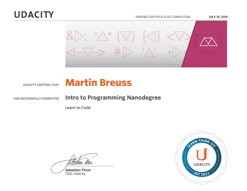This ND includes a variety of independent MOOCs, for example: Intro to HTML and CSS, Intro to Programming, Web Development, Object-Oriented Programming and Intro to JavaScript. I learned to use HTML, CSS, some JavaScript and practiced Python programming. Additionally, I practiced my theoretical understanding of internet and computer basics. This ND also set the foundation for me making this website :)
Data Analyst Nanodegree
This ND summarizes a few MOOCs related to Data Science. I'm still working on it, so here's a link to my projects on github. So far I've encountered the SciPy stack (using iPython notebooks, numpy, pandas, matplotlib) and currently starting to work with cleaning and querying OSM data.
2015
Using Python to Access Web Data
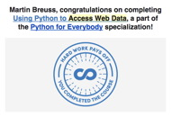Took it as a light introduction to data acquistion that I'm learning more in-depth in the Data Analyst ND.
Verified: Process Mining: Data Science in Action
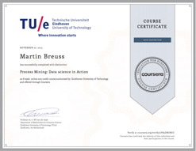Bringing data to life by mining the processes within. Creating process maps, working with ProM and Disco. I rediscovered Charles Joseph Minard's map of Napoleon's defeat in Russia 1812-1813, which I find an inspiring example of Data Visualization. The course also talks about the similarities between processes and maps, and got me excited about cartography.
6.00.1x: Introduction to Computer Science and Programming Using Python
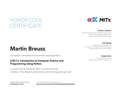A quite different Introduction to Python programming, that felt like a great additions to my knowledge up to then. It allowed me to approach the topic of programming more theoretically, and I'd say it encompasses quite some aspects of Computer Science.
Chicken Behaviour and Welfare
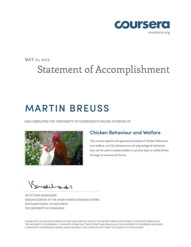A beautiful course that taught me a lot of respect for chickens. Their peaks are extremely sensitve and greatly skilled perceptive organs!
Principles of Computing (Part 1)
It's a successor to An Introduction to Interactive Programming in Python, however I did not enjoy this course as much. Too much aggressive 'joking' among the instructors. I stopped working on it after a while.
Introduction to Mathematical Thinking
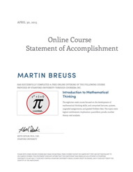It's one of my big tasks to train my math brain. This course was pleasant and interesting. I always liked logic, and I agree that one should take a walk/climb/bikeride as a break when brooding over some understanding.
Circadian Clocks: how rhythms structure life
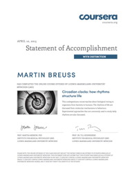The processes behind and effects of natural rhythms in our lifes (and how they are getting damaged daily). Every cell has its own clock, and we use Zeitgeber (especially light!) to synchronize. Records of births in Spain showed an annual oscillation until: the advent of electrical light.
Welcome to Game Theory
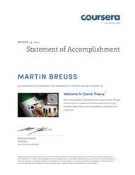This course made my mind go 'whoa!' pretty often. Concepts of Game Theory jumped into all aspects of my life through watching the lectures. There's a stable balance that situations converge to - but: there are more stable situations. And only because one of them is, doesn't mean it's the best one! (I guess usually it isn't) But because every move away from there makes things (temporarily) worse, it's difficult to look for, and to find a better equilibrium.
Origins - Formation of the Universe, Solar System, Earth and Life
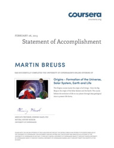Sounds like Life, the Universe and Everything. :) The course was really well made and I learned a lot about physics, geology, paleobiology and astronomy (especially those metorites stayed with me). Very thorough, interesting and insightful!
An Introduction to Consumer Neuroscience & Neuromarketing
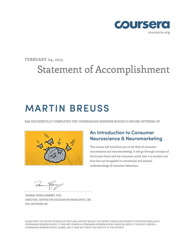This course had a very interesting topic, and the lectures were pleasant. However, the written projects I got to peer review showed that understanding didn't come too easily to everyone.
Dino 101 : Dinosaur Paleobiology
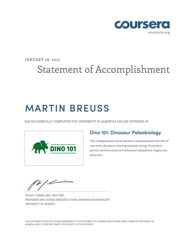I'm a Dino-kid. Knew the names, had the magazines and loads of hard-plastic figures. This course was a dive into my, and earth's, past. Learned a lot of new things, and re-learned some others. When I was small, dinosaurs didn't have feathers yet ;)
2014
Internet History, Technology, and Security
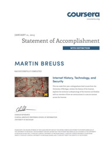There's still much more to learn, but I got some insights into the inner functionings of the internet. Listened to inventors talk, thought about the layer model of TCP/IP, encryption techniques, and altogether managed to grasp some basics.
Epidemics - the Dynamics of Infectious Diseases
Extremely interesting and well done! I did the whole course, passed all the quizzes and learned a lot (however, no certificate because I didn't do a forum post). I still felt like having the course among the others. Here I got to know about John Snow's Cholera map of 1855. A great example of gaining insights from spatial mapping of information.
Programming for Everybody (Python)
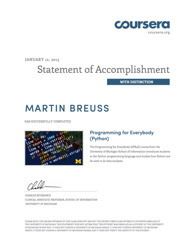Yet another Intro to Python, a different and much lighter approach. The book is great (I read just a bit), and the course was a great way to relax a little while still staying on topic. Enjoyable!
Process Mining: Data Science in Action
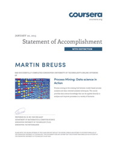Taught me a lot about processes and was a lively way to learn about Data Science. I enjoyed this course so much, that I re-took it in 2015, even paying for a Verified certificate
How to Learn Maths: For Students
Totally sweet! Made me start playing with numbers, and visualize operations with coloured squares. I'm still planning to finish this one, but keeping it around for motivational boosts :)
Introductory Human Physiology
Gained some insights into how it all works inside of myself. Good course, covering cell biology up to organ functions. Worked on it quite some, but didn't finish. While swimming lengths in the pool, I was thinking about the molecular processes that were going on inside of me!
Verified: An Introduction to Interactive Programming in Python
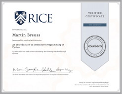My first MOOC learning Python. I coded some little games. I especially enjoyed the very well done Peer Review System that allowed me to see a lot of other people's code and learn from giving feedback.
From the Big Bang to Dark Energy
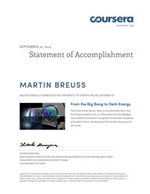I have a weakness for Astronomy. I find it thoroughly exciting to understand for a short moment how tiny we are as compared to the distances and sizes that roam the universe. I'm just a tiny dot on a dot that is nothing but a tiny dot in another (slightly bigger) tiny dot revolving around a dot that is still pretty damn small and represents little areas in a growing space with many (but compared to the size only a few) small clusters of all these same dots I talked about before. :o
Child Nutrition and Cooking
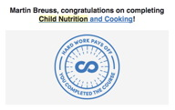Thinking about US cooking- and eating-habits, and learning a little about government tries to decrease obesity. Did it in night shifts.
Managing Your Time, Money, and Career: MBA Insights for Undergraduates
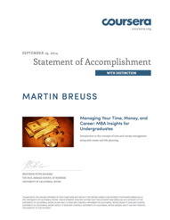Great tips and some handling of calculations. The course had a light and enjoyable pace, with lots of take-aways :) Got some insights into US culture, too. And yes: Compounding interest!
Economics 1: Principles of Economics
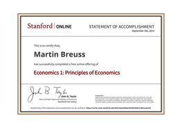Whoa! This was really good. The first MOOC I completed, working on it only for a few days, since I discovered it not long before the deadline. It was also my first real introduction to Economics ever, and so well delivered and gripping! I especially enjoyed the Orange-selling-game.